<!DOCTYPE html>

<head>
	<meta charset="utf-8">
	<meta name="keywords" content="HTML,CSS,JavaScript,THREE.js">
	<meta name="viewport" content="width=device-width, initial-scale=1.0">
	<link rel="stylesheet" type="text/css" href="style.css">
	<title>基于连续文化序列的数据可视化</title>
	<!-- <meta name='viewport' content='width=device-width'/>. -->
	<!-- <link href="https://fonts.googleapis.com/css?family=Source+Serif+Pro:400,600&display=swap" rel="stylesheet"> -->


	<!-- Google Tag Manager -->


	<script> // 实现节点的详细内容跳转
	  (function (w, d, s, l, i) {
	    w[l] = w[l] || [];
	    w[l].push({ "gtm.start": new Date().getTime(), event: "gtm.js" });
	    var f = d.getElementsByTagName(s)[0],
	      j = d.createElement(s),
	      dl = l != "dataLayer" ? "&l=" + l : "";
	    j.async = true;
	    j.src = "https://www.googletagmanager.com/gtm.js?id=" + i + dl;

	    j.addEventListener("load", function () {
	      var _ge = new CustomEvent("gtm_loaded", { bubbles: true });
	      d.dispatchEvent(_ge);
	    });

	    f.parentNode.insertBefore(j, f);
	  })(window, document, "script", "dataLayer", "GTM-NWDMT9Q");
	</script>
	<!-- End Google Tag Manager -->
</head>

<body>
	<!-- 该部分就是左上那个三条杠，点击旋转就会出现菜单栏的 -->


	<!-- <nav> 标签定义导航链接的部分 -->
	<nav id="menu">

	</nav>

	<!-- 右上部分 暂时不管有缺失-->
	<!-- <div id="legend">
		<a href="javascript:collapse('legend ul','legend .collapse',true)"></a>
		<p>Legend</p>
		<a id="tab-nav" class="desktop" href="javascript:$('#info').focus();nextDiamond();" data-track="click"
			data-track-action="zoom to feature" data-track-label="button" data-track-category="legend">Featured paper
			</a>
		<a id="toggle-gyro" class="gyro" style="margin-top:10px; display:inline-block; display:none;"
			href="javascript:toggleGyro()">Device motion off</a>
		<ul>
			<li><p>Featured Paper</p></li>
			<li><p>Network Feature</p></li>
		</ul>
	</div> -->

	<!-- 在单击菜单栏后弹出的部分 -->


	<!-- 菜单栏的controls模块详细内容 -->


	<!-- 菜单栏的credits模块的详细内容 -->


	<!-- 正下方搜索模块 -->


	<!-- 中间可视化部分 -->
	<div id="container"></div>


	<a id="downloadAnchorElem" style="display:none"></a>


	<!-- // attribute float size;
	// attribute vec3 customColor;
	// varying vec3 vColor;
// attribute float alpha;
// varying float vAlpha;
	// void main() {
//   vAlpha = alpha;
	// 	vColor = customColor;
	// 	vec4 mvPosition = modelViewMatrix * vec4( position, 1.0 );
	// 	gl_PointSize = size * ( 300.0 / -mvPosition.z );
	// 	gl_Position = projectionMatrix * mvPosition;
	// } -->

	<!-- 两个自定义script实现上色功能，注意这两个script的type类型不是text/JavaScript，所以代码颜色是白色的 -->
	<script type="x-shader/x-vertex" id="vertexshader">

            attribute float size;  //定义float类型变量size
			attribute vec4 customColor;
			varying vec4 vColor;  //定义插值类型变量vcolor
			void main() {
				vColor = customColor; //attribute变量赋值给varying变量实现插值
				vec4 mvPosition = modelViewMatrix * vec4( position, 1.0 );
				gl_PointSize = size * ( 300.0 / -mvPosition.z );
				gl_Position = projectionMatrix * mvPosition;
			}

		</script>


		<!-- // //uniform vec3 directionalLightColor[ MAX_DIR_LIGHTS ];
		// //uniform vec3 directionalLightDirection[ MAX_DIR_LIGHTS ];
		// uniform vec3 color;
			  // uniform sampler2D texture;
			  // varying vec3 vColor;
		// varying float vAlpha;
			  // void main() {
			  // 	gl_FragColor = vec4( color * vColor, vAlpha);
			  // 	gl_FragColor = gl_FragColor * texture2D( texture, gl_PointCoord );
			  // }
			  // float fogFactor = 0;
			  //gl_FragColor = mix( gl_FragColor, vec4( fogColor, gl_FragColor.w ), fogFactor ); -->

	<script type="x-shader/x-fragment" id="fragmentshader">
        	uniform vec3 color; //类同attribute但是是声明非顶点数据变量，比如光源的数据
			uniform sampler2D texture;
			varying vec4 vColor;  //第二次声明用于接收上面的值
			void main() {
				vec4 outColor = texture2D( texture, gl_PointCoord );
				if ( outColor.a < 0.5 ) discard;
				gl_FragColor = outColor * vec4( color * vColor.xyz, 1.0 );
				float depth = gl_FragCoord.z / gl_FragCoord.w;
				const vec3 fogColor = vec3( 0.0 );
				float fogFactor = smoothstep( 2000.0, 60000000.0, depth );

			}
		</script>

	<script type="text/javascript" src="js/vendor/jquery-3.3.1.min.js"></script>
	<script type="text/javascript"  src="js/vendor/three.js"></script>
	<script type="text/javascript"  src="js/vendor/DeviceOrientationControls.js"></script>
	<script type="text/javascript"  src="js/vendor/OrbitControls.js"></script>
	<!-- <script type="text/javascript" <script src="js/vendor/DeviceOrientationController.js"></script> -->
	<script type="text/javascript"  src="js/ui.js"></script>
	<!-- <script type="text/javascript"  src="js/makejson.js"></script> -->
	<!-- <script type="text/javascript"  src="js/impact-vr.js"></script> -->
	<script type="text/javascript"  src="js/impact-vr 2.js"></script>
</body>

</html>
